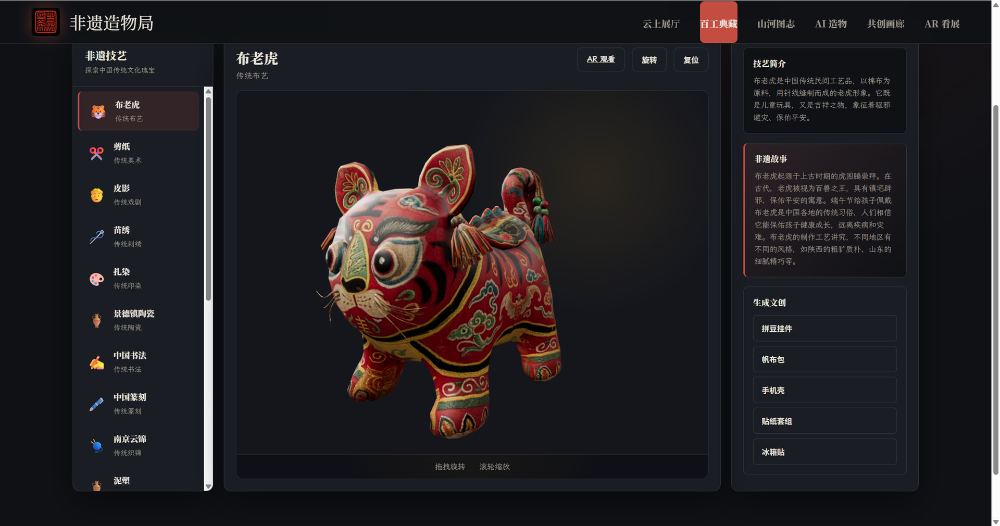
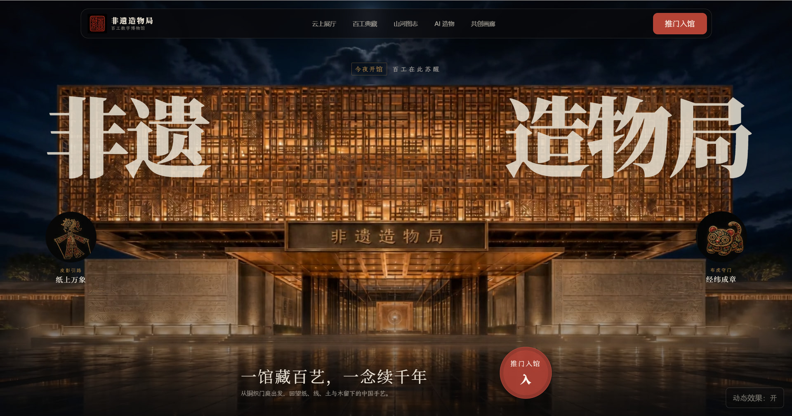
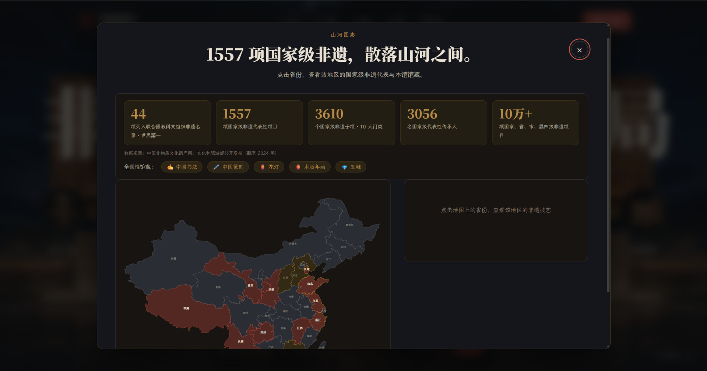
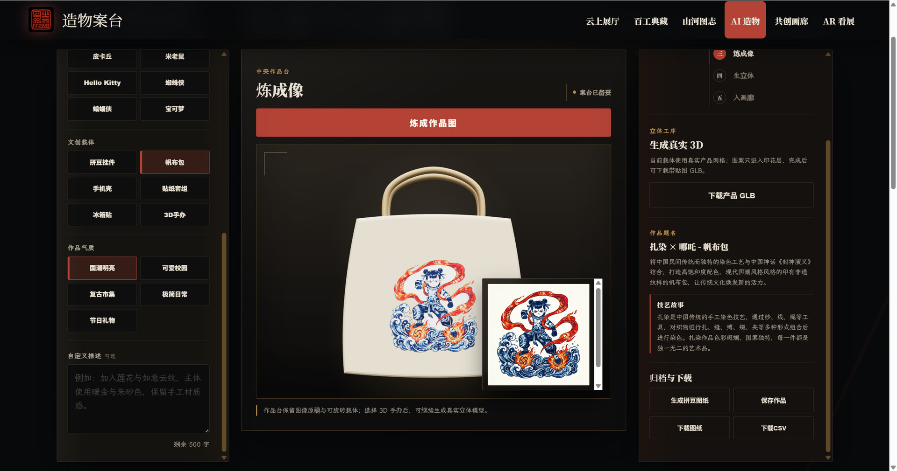
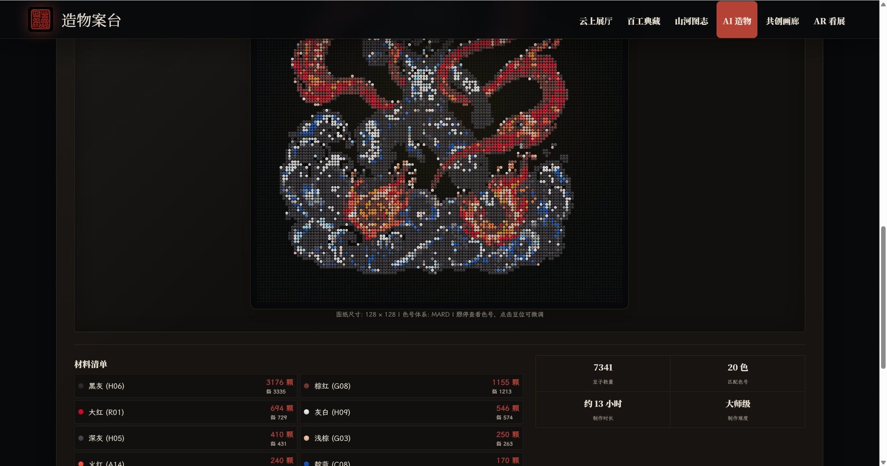
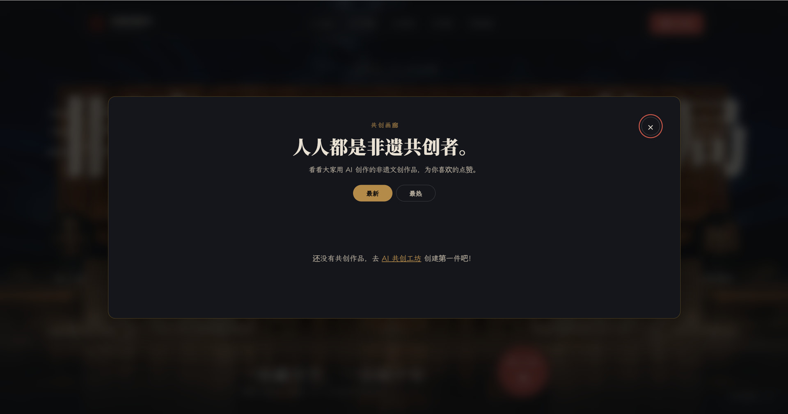

百工典藏
旋转鉴赏 3D 藏品
从造型、纹理到材料细节，近距离认识十八项非遗技艺。

非遗造物局
AI 非遗共创数字博物馆
一馆藏百艺 · 一念续千年
看展、理解、共创，再把灵感变成能够亲手制作的作品。
云上展厅
六个真实产品界面，串起一条从文化发现到手作落地的完整路径。

从造型、纹理到材料细节，近距离认识十八项非遗技艺。

在地图上发现各地非遗资源，让一件作品重新连接它生长的土地。

把非遗技艺、文化元素、文创载体和视觉风格组合成新的创作方向。

自动整理拼豆色号、数量、材料清单、制作时间与难度。

作品在这里汇聚，也让非遗被更多人看见、使用和重新创造。
01/ 05
离线造物签
选择技艺、载体与气质，在本地生成一张属于你的造物签。
非遗造物局 · 第 001 号
让蓝白晕染化作山海潮汐，在日常出行中带走一片不可复制的云纹。
看见 · 理解 · 共创
它可以在今天继续被使用、被分享，也被重新创造。